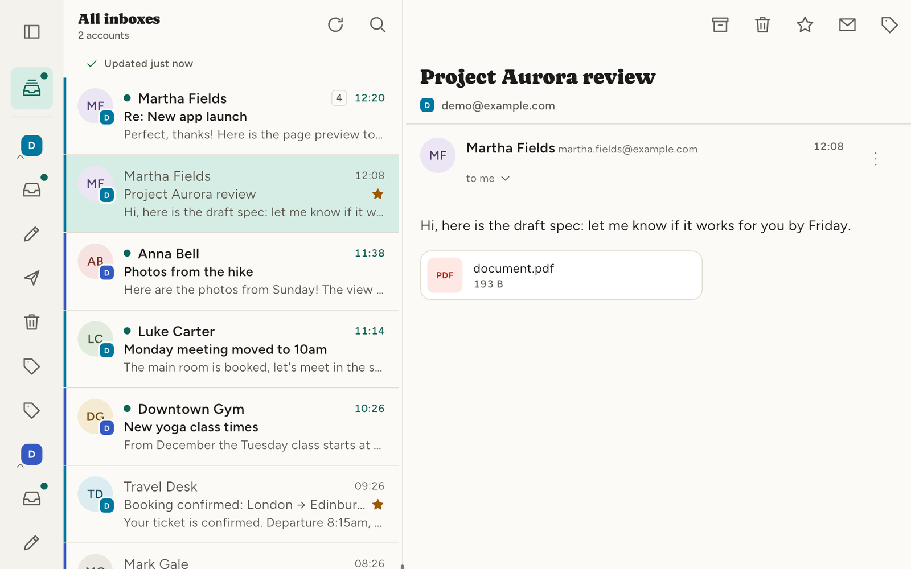
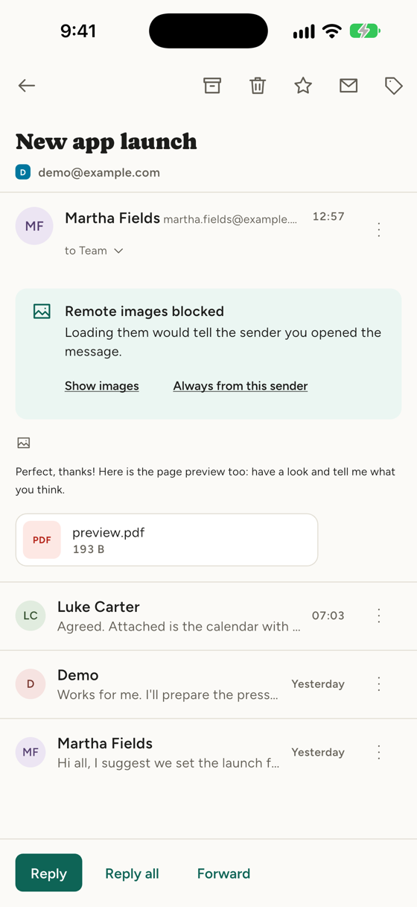
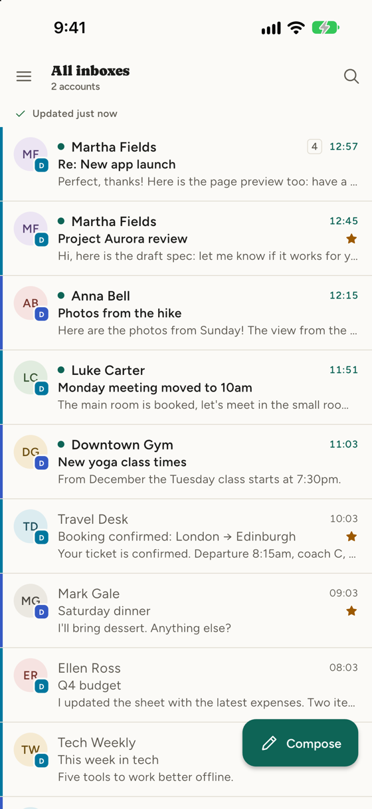
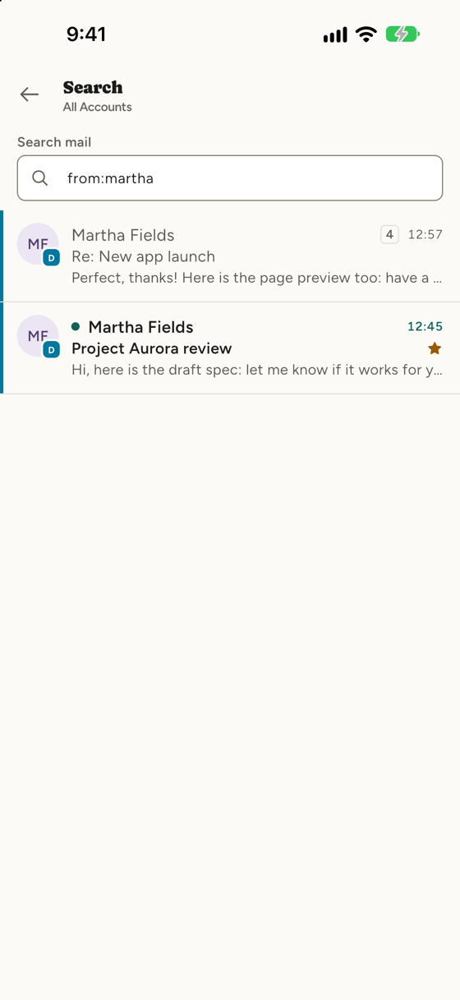

Email client
All your email in one place.
An email client that brings all your email accounts together in one place, fast even offline.
Free · macOS, Android, iPhone and iPad · Version __VERSION__


No mail server
Postino has no mail server of its own: it talks only to your providers.
Encrypted on your device
Recent mail is stored in an encrypted database on your device: you can read it without a connection.
No analytics, no ads
The app has no analytics, no advertising and no automatic error collection. The one exception, QR scanning on Android, is in the privacy policy.
Unified Inbox
All your accounts in a single inbox.
Sorted by date. Each account has its own colour, so you can tell at a glance where a message comes from.
- GmailSign in with Google
- Outlook.com, Hotmail, LivePersonal Microsoft account
- Microsoft 365Work or school account
- iCloud and any IMAP mailboxWith your password

Offline and private
Read it without a connection.
Recent mail is stored in an encrypted database on your device. Postino has no mail server of its own: it talks only to your providers.
- Actions (archive, star, mark as read…) go out when the connection is back.
- Remote images stay blocked until you choose to see them.
Search
Results appear as you type.
From the mail on your device, with filters. For older mail the search goes on at the provider.
- Unread
- Starred
- Attachments
- Account
- Dates

And more.
Notifications with actions
New mail notifications are grouped by account and have two buttons of your choice, for example Archive and Mark as read.
On-device automatic labelling
Turn on automatic labelling for a label, with a description if you like, and Postino applies it by itself to new messages that resemble it. The model runs on your device.
Synced settings
If you turn it on, Postino keeps accounts, colours, swipe actions and automatic labels in step across your devices, in your Google Drive. All encrypted, with a key that stays on your devices. Never your mail.
Privacy
Your mail travels only between you and your providers.
The developer receives your data only if you send a problem report yourself.
On macOS the database key is not yet protected from backups. It is in the login Keychain and can end up in Time Machine backups. Read the privacy policy
Mail encrypted on your device
Headers, bodies, labels, drafts and outgoing messages are in a database encrypted with SQLCipher.
Credentials in the system keychain
Access tokens and passwords are used only with the provider they belong to.
On-device automatic labelling
The model runs on your device: message content is not sent to any service.
Remote images blocked
They are downloaded only if you choose to see them, for one message or for a trusted sender.
A website without cookies
These pages use no cookies, analytics or third-party content: even the fonts are served from here.
Guide
From installation to your first account.
Requirements, installation and updates, step by step, are in the guide for invitees (in Italian).
Open the guide- Installing Postino on macOSOpen the DMG and drag Postino into the Applications folder.
- Installing Postino on AndroidDownload the APK from the phone's browser and allow the installation.
- Installing Postino on iOSThrough TestFlight, by invitation, until it reaches the App Store.
- Connecting a Gmail accountThe “Google hasn't verified this app” screen and the limit of 100 Google accounts.
Version __VERSION__ · free
Download Postino
The buttons download version __VERSION__.
-
macOS
Coming to the Mac App Store
Open the DMG and drag Postino into the Applications folder. The app is signed by the developer, notarized by Apple and updates itself.
Download the DMG -
Android
Download the APK from the phone's browser, not from another app's built-in browser, and open it. When Android asks, allow installs from unknown sources.
Download the APK -
iPhone and iPad
Coming to the App Store
The link will appear here at launch. Meanwhile it installs through TestFlight, by invitation.
Installing with TestFlight (in Italian)
Frequently asked questions
How do I open Postino on macOS?
On first launch macOS asks you to confirm opening an app downloaded from the Internet: choose “Open”.
How is Postino updated?
On macOS it updates itself, and you can check for updates with “Check for Updates…” in the Postino menu. On Android and iOS Postino tells you when a new version is out: on Android install the new APK over the one you have, on iOS update it from the App Store or from TestFlight. Your accounts and mail stay.
For everything else, from connecting a Gmail account to reporting a problem, see the guide for invitees (in Italian).
Stable links
The buttons above stay fixed on __VERSION__. These links always point to the latest version.
Postino is free to download.
If you find it useful, you can buy me a coffee.